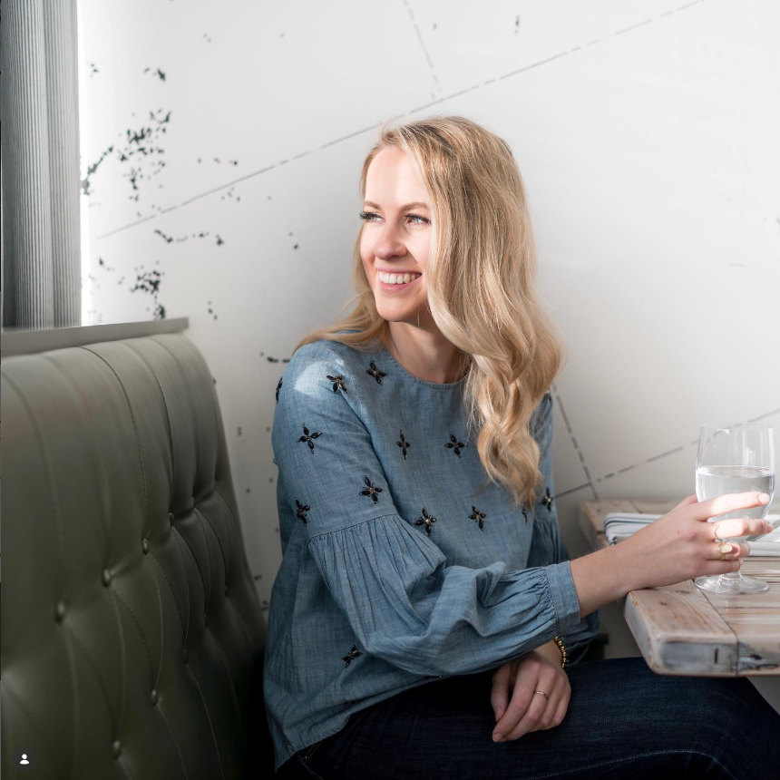
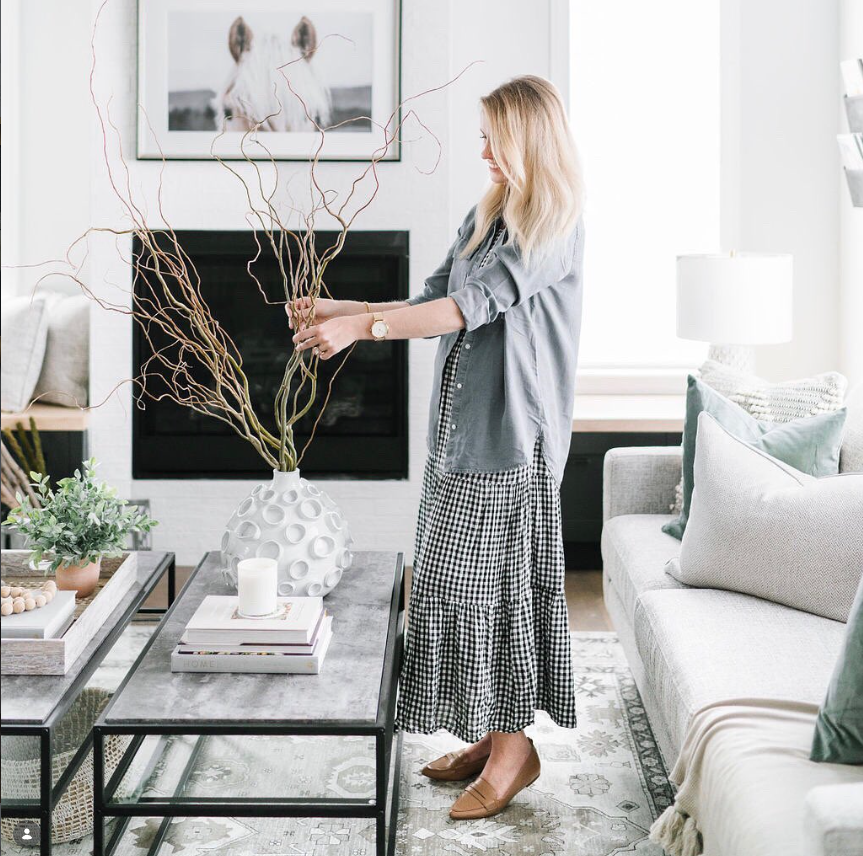

Sarah Beadle is the principal designer and founder of Gioia Interiors. With design education from Mount Royal University and Bow Valley College, Sarah has spent the past six years in the industry working with clients across Western Canada.
She has a passion for creating environments that bring joy and improve the quality of space while reflecting each client's unique needs and personality. The top tools in her skill set are creating trust right from the start, building strong teams through collaboration, maintaining open communication, developing lasting relationships, creating cohesive concepts, and providing one-of-a-kind designs.
Sarah believes in working on the same level with the client while providing support, expertise, and confidence throughout their project. Her designs are infused with timelessness, functionality, comfort, and personality while evoking emotions experienced when in a state of well-being.
Outside of design, she loves Venice, Italy; surrounding herself with loved ones; chocolate chip cookies; breathing in fresh air from the top of a mountain; and layering, whether in fashion or design.
In her spare time, you'll find Sarah dreaming of eating gelato in Venice, catching up with friends at local cafes, clearing her head on a jog, attempting not to fall asleep during shavasana in yoga, exploring homes in nearby communities, or hiking, camping, and boating in nature.

Allows clients to be heard, understood, and involved during the design process. Clients feel a sense of ownership and control with their project.
Keeps clients in the loop, minimizing surprises and upset. We provide tools for everyone involved—client, contractor, and trades—so miscommunication is minimized and expensive mistakes don't happen.
Gioia becomes the client's advocate and voice, both on and off site. We ensure each project finishes with the highest quality workmanship to the client's complete satisfaction.
"Sarah is very good at being thoughtful towards our tastes without pressuring us towards a certain decision. She easily exhibits her knowledge of design and we were so thankful to have her holding our hand every step of the way, taking out the stress in a process that should be enjoyable."
- Laura & Cole, Strathmore House
Gioia Interiors is a boutique design firm based in Calgary, Alberta, serving all of Western Canada. We specialize in residential and hospitality design and take on projects of all sizes—from full home renovations to single room updates.
Contact Us